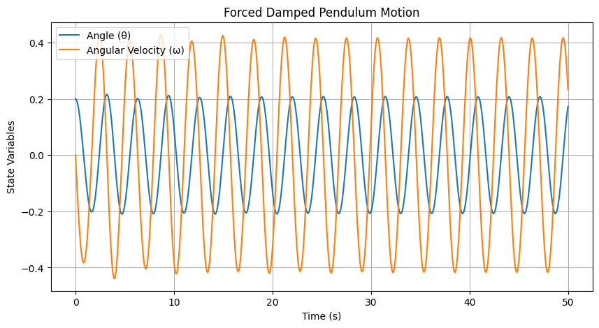
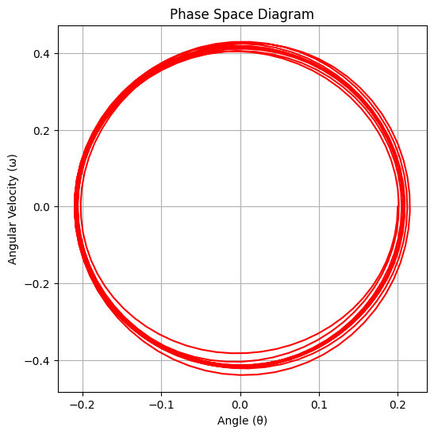
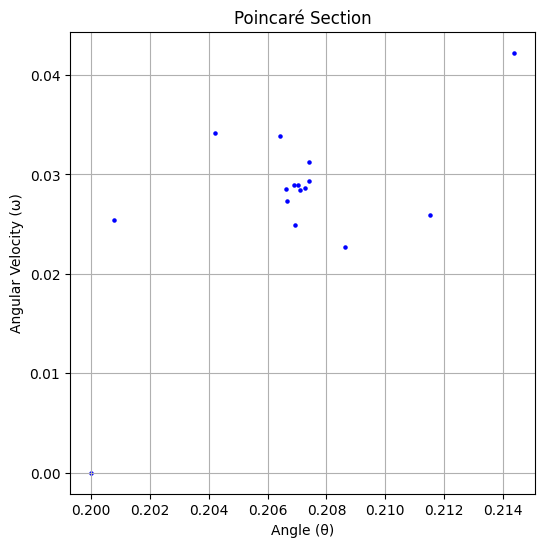

Problem 2
Theoretical Foundation: Forced Damped Pendulum
1. Governing Equation
The motion of a forced damped pendulum is described by:
where: - \(b\) is the damping coefficient, - \(g/L\) represents the natural oscillation frequency, - \(A \cos(\omega t)\) is the external periodic force.
2. Small-Angle Approximation
For small angles (\(\theta \approx 0\)), we use the approximation \(\sin\theta \approx \theta\), simplifying the equation to:
This reduces the system to a linear differential equation, which can be solved analytically.
3. Resonance and Energy Implications
- Natural Frequency:
$$ \omega_0 = \sqrt{g/L} $$ - Resonance Condition:
When the driving frequency \(\omega\) matches \(\omega_0\), the system experiences resonance, leading to large oscillations. - Damping Effects:
Higher damping (\(b\)) reduces oscillation amplitude and prevents unbounded energy growth.
Analysis of Dynamics
1. Influence of Parameters on Motion
The behavior of the forced damped pendulum depends on key parameters:
- Damping Coefficient (\(b\))
- Higher damping reduces oscillations and eventually brings the pendulum to rest.
-
Lower damping allows sustained motion and can lead to resonance effects.
-
Driving Amplitude (\(A\))
- Small \(A\) results in steady periodic motion.
-
Large \(A\) can induce irregular motion, leading to chaotic behavior.
-
Driving Frequency (\(\omega\))
- When \(\omega \approx \omega_0\) (natural frequency), resonance occurs, amplifying oscillations.
- At non-resonant frequencies, motion remains stable but varies in amplitude.
2. Transition from Regular to Chaotic Motion
- At low driving forces, the pendulum follows predictable periodic motion.
- Increasing \(A\) or adjusting \(\omega\) can introduce nonlinear effects, where motion becomes quasi-periodic or chaotic.
- Chaotic motion means small differences in initial conditions lead to drastically different trajectories, making long-term prediction impossible.
3. Physical Interpretation
- Regular motion is seen in clocks and metronomes where precise oscillations are required.
- Chaotic behavior appears in weather systems, electrical circuits, and biological rhythms, where nonlinearity dominates.
Practical Applications of the Forced Damped Pendulum
The forced damped pendulum model has widespread applications in engineering, physics, and real-world systems. Below are some key areas where it plays a crucial role:
1. Energy Harvesting Devices
- Example: Piezoelectric energy harvesters convert oscillations into electrical power.
- The pendulum’s motion can be used to generate electricity in wearable sensors, self-powered devices, and vibrational energy systems.
2. Suspension Bridges
- Bridges experience oscillations due to wind forces and traffic loads.
- If the forcing frequency matches the bridge’s natural frequency (resonance), it can cause dangerous oscillations (e.g., Tacoma Narrows Bridge collapse).
- Engineers use damping mechanisms to prevent excessive movement.
3. Oscillating Electrical Circuits (RLC Circuits)
- The forced damped pendulum is analogous to RLC circuits in electronics.
- In an RLC circuit:
- Damping (\(b\)) corresponds to electrical resistance.
- Natural frequency (\(\omega_0\)) depends on inductance and capacitance.
- Driving force (\(A \cos(\omega t)\)) represents an AC voltage source.
- Understanding this analogy helps in designing filters, oscillators, and signal-processing devices.
4. Human Movement and Biomechanics
- Example: The human gait involves periodic motion controlled by muscles and external forces.
- Rehabilitation therapy and prosthetic limb design apply the principles of forced oscillations.
Conclusion
The forced damped pendulum isn’t just a theoretical concept—it plays a vital role in engineering, biomechanics, and energy systems. Understanding these dynamics allows us to improve stability, efficiency, and safety in various real-world applications.
Implementation: Simulating the Forced Damped Pendulum
We implement a numerical simulation of the forced damped pendulum using Python. The motion is governed by:
where: - \(b\) is the damping coefficient, - \(A \cos(\omega t)\) is the external driving force, - \(g/L\) represents the natural oscillation frequency.
1. Numerical Simulation (Runge-Kutta Method)
import numpy as np
import matplotlib.pyplot as plt
from scipy.integrate import solve_ivp
# Define the differential equation
def pendulum(t, state, b, A, omega, g, L):
theta, omega_dot = state
dtheta_dt = omega_dot
domega_dt = -b * omega_dot - (g / L) * np.sin(theta) + A * np.cos(omega * t)
return [dtheta_dt, domega_dt]
# Parameters
b = 0.2 # Damping coefficient
A = 1.2 # Driving force amplitude
omega = 2.0 # Driving frequency
g = 9.81 # Gravity
L = 1.0 # Pendulum length
theta0 = 0.2 # Initial angle
omega0 = 0.0 # Initial angular velocity
t_span = (0, 50) # Time interval
t_eval = np.linspace(*t_span, 1000)
# Solve ODE using Runge-Kutta method
sol = solve_ivp(pendulum, t_span, [theta0, omega0], args=(b, A, omega, g, L), t_eval=t_eval)
# Plot the pendulum's motion over time
plt.figure(figsize=(10, 5))
plt.plot(sol.t, sol.y[0], label="Angle (θ)")
plt.plot(sol.t, sol.y[1], label="Angular Velocity (ω)")
plt.xlabel("Time (s)")
plt.ylabel("State Variables")
plt.title("Forced Damped Pendulum Motion")
plt.legend()
plt.grid()
plt.show()

2. Phase Space Diagram
The phase space plot shows how the system evolves over time, highlighting periodic or chaotic motion.
plt.figure(figsize=(6, 6))
plt.plot(sol.y[0], sol.y[1], color='red')
plt.xlabel("Angle (θ)")
plt.ylabel("Angular Velocity (ω)")
plt.title("Phase Space Diagram")
plt.grid()
plt.show()

3. Poincaré Section (Chaos Analysis)
A Poincaré section helps visualize transitions from regular to chaotic behavior by plotting states at fixed time intervals.
times = np.arange(0, 50, 2*np.pi/omega) # Strobe at the driving frequency
theta_poincare = np.interp(times, sol.t, sol.y[0])
omega_poincare = np.interp(times, sol.t, sol.y[1])
plt.figure(figsize=(6, 6))
plt.scatter(theta_poincare, omega_poincare, color='blue', s=5)
plt.xlabel("Angle (θ)")
plt.ylabel("Angular Velocity (ω)")
plt.title("Poincaré Section")
plt.grid()
plt.show()
